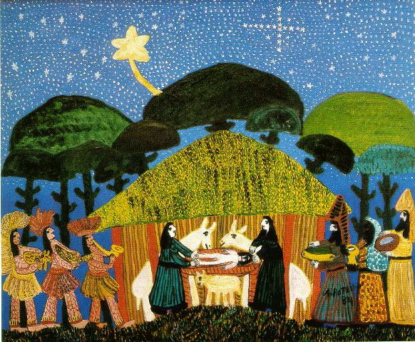

M
erry
C
hristmas

(Flash Player may act strange in some browsers...click
second button from the right 3x's
and then click 'play' if it does)
Selection #1 - "Christ is Come Today!" Streetsville Choir accompanied by only a Phoenix
Organ with orchestral sounds and percussions played 'real-time'.
Selection #2 - "Bring A Torch, Isabella" played by Darrell Ackmann on his residence organ, Phoenix PD364.
Selection#3 - "Still, Still, Still", Bell Choir (unknown). ENJOY!
May you all have a Blessed Christmas and a Wonderful New Year!